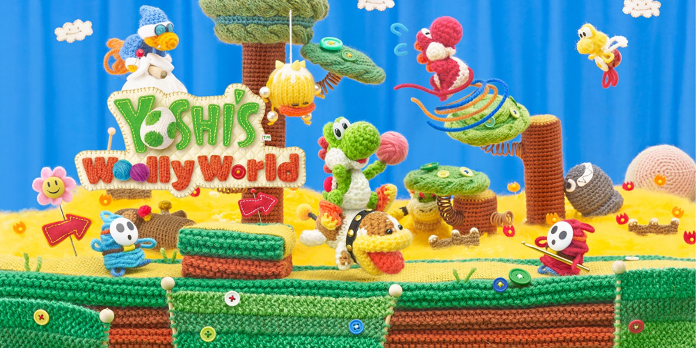

There Are millions of video games in the world but out of all of them there are 4 games I like the best. I will talk about them and why I like these 4 games (all Nintendo games), My 4 Favourite Video Games are:
Every single Mario Party game I love, whether it's mario party 1, or 9, I like all of them. Mario party is a game where you have to get coins to buy stars, whoever has the most stars at the end wins. The First mario Party game I ever play was mario party 9, I loved that game, it was fun to play, and was a great game. the main reason to why I love the mario party games is cause I get to play it with other and the strats in the game, the minigames and trying to get stars while competing with your family and friends is super fun.

To learn more about Mario Party Click here
Pikmin is a game where you are a crew going to another planet to get food for your home planet cause your home planet is dying but your ship crash during landing and now you are stuck on the planet but these little things call pikmin help you out. The reason I like this series is because:
To Learn More About Pikmin Click Here
Yoshi Woolly world is a game where you play as a yoshi and your friend get turn in yarn, so you must go out and save your friends and stop the bad guys. Yoshi woolly can also be played by 2 people. Yoshi is one of my favourite character and this game is all about yoshi. traveling through the levels and finding secret and fighting bosses is what makes a mario games fun. yoshi woolly has challenging levels and lots to do like a boss rush and finding every flower.
To Learn More About Yoshi Woolly World Click here
Super Mario 64 is a game where you got to collect stars to save the princess from the evil bowser, This game is very old, this game was made in 1996 which make this game 28 years old, I love retro games so like super mario bro 3, tetris, or even paper mario, any retro I love. Even though I am only a teen playing this game give so much nostalgia, this game is fun and finding and trying to get all 120 stars while the level get harder is super fun, Sm64 has 15 levels each with 7 stars + there are 15 stars hidden somewhere in the castle. you got to go through the level and do a certain task to get the stars, the task could be defeat this guy, or get 100 coins. The story and the music in the game is super good to. This game is also very popular and is one of the biggest game ever, it's also has one of the biggest speedrun community (I have done a speedrun). This game just has so much which is why it makes the list.

To Learn More About Sm64 Click here